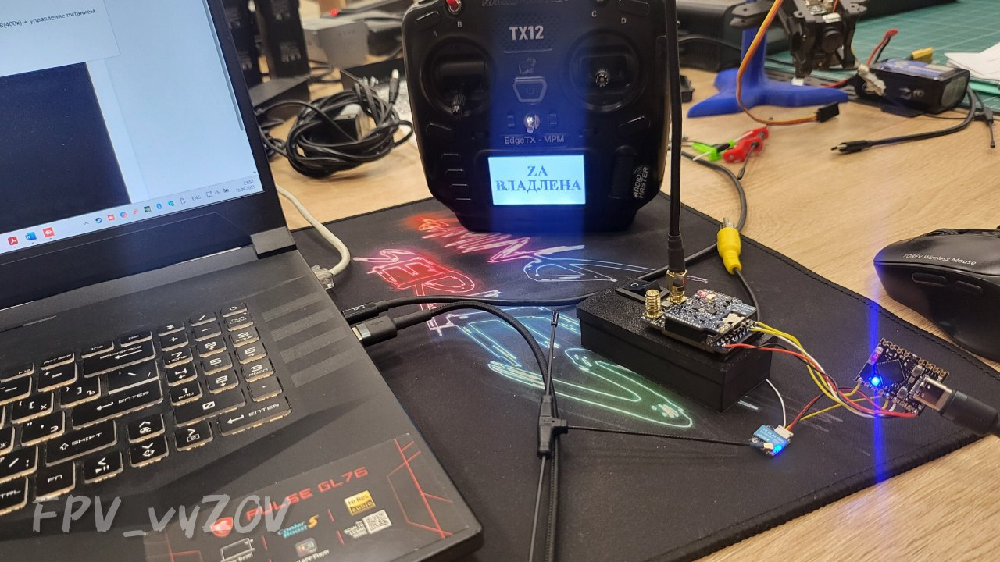
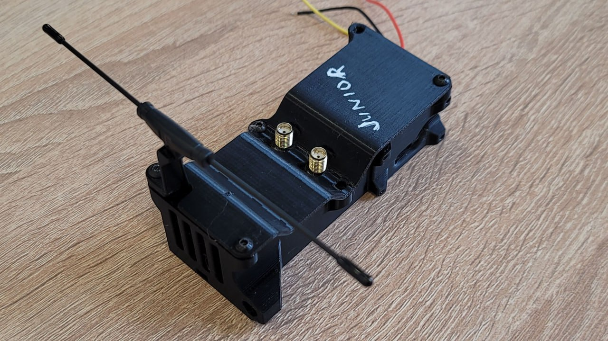

Модель для 3Д-печати выноса/ретранслятора для G13 Junior.
📝
Это вложение из поста t.me/platforma_fpv/35/1723

Прошивка Юниор (Junior) от G-13
ℹ️ Прошивка для простого управления видео_каналами с пульта. Позволяет переключать заранее настроенные видеоканалы в полете, до 10 каналов в рамках сетки VRX.
О прошивке ЮНИОР
Совместимое оборудование
:
Видеоприемники (на выбор):
- SKYZONE Steadyview V3.3,
- SKYZONE SteadyView X 5Ghz,
- SKYZONE SteadyView X 5.8 Ghz,
- Foxeer Wildfire,
- 5.8 VRX «Аналогов нет»,
- 1,2 VRX «Аналогов нет»,
- FT1200,
- FT3500.
Приемник управления (на выбор):
- любой ELRS,
- любой TBS.
Инструкции
по прошивке
📎
🎞 На фото видеоприемник упакован в
(лайфхак для технического специалиста)
📦
Кейсы для готовых решений G13
#ПРОШИВКА
#FPV
#техник_fpv
#видео
#Прошивка_для_переключения_видеоканалов
Это вложение из поста t.me/platforma_fpv/2/1583
Вынос-ретранслятор для G13 Junior
На фото выполнена сборка в исполнении - ретранслятор.
Вынос или ретранслятор собираются в одном корпусе.
различие заключается в наполнении.
- В выносе в корпус дополнительно устанавливается понижающий преобразователь.
- В ретрансляторе на внешнее крепление устанавливается видеопередатчик (если размер крепления не подходит под Ваш передатчик, используйте "переходную плиту") и разъем для подключения АКБ (обычно это XT60E-M).
Дополнительно понадобятся:
-
Непроверенная внешняя ссылка
гнездовой разъем YTTSQC 2,54 мм
гнездовой разъем YTTSQC 2,54 мм
(как пример),
-
Непроверенная внешняя ссылка
понижающий преобразователь от 30В до 5В
понижающий преобразователь от 30В до 5В
(для выноса), (как пример),
- разъем XT60E-M (для ретранслятора),
- винты М3х8.
При сборке гнездовой разъем YTTSQC 2,54 мм устанавливается в деталь "Гребенка_Junior_FPV_vyZOV", контакты загибаются вдоль направляющих, и к ним производится пайка.
К самому приемнику ничего паять не нужно, от просто вставляется в гнездо.
📎
при поддержке
#3Д_для_периферийных_устройств
#G13
#техник_бпла
Веб-страница создана автоматически на основе поста пользователя ПЛАТФОРМА_FPV